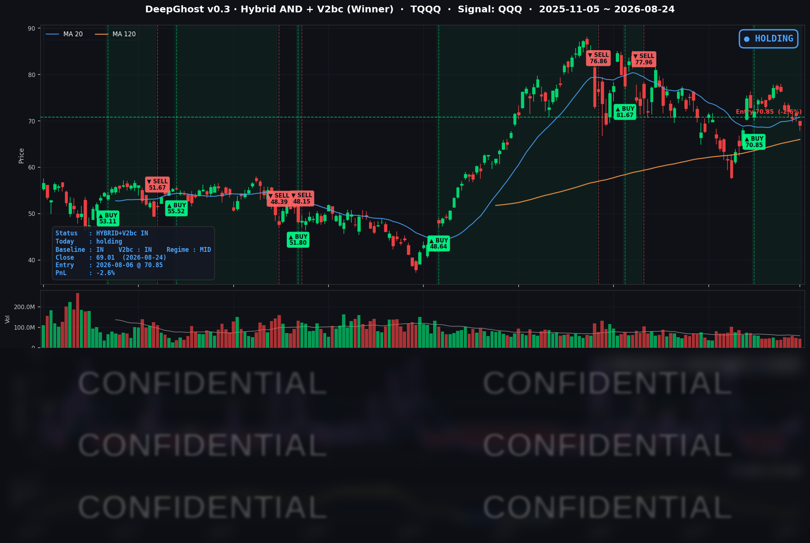

👻 매일 시그널과 히스토리를 홈페이지에서 한눈에 → www.ghostai.co.kr
지수는 크게 움직이지 않았지만 반도체를 비롯한 AI 주식만 하락했습니다. 미 재무부는 장기금리를 누르려는 의지를 확실히 보여주었지만 냉각된 투자심리가 이를 넘어서지 못했습니다. 지금이 심리적 지지선 입니다. 이가격 선을 지키지 못하면 크게 무너질 수도 있습니다. 엔비디아 실적 발표 전에 매도 신호가 나올 수도 있겠내요. 불안한 장에서는 뇌동하지 마시고 룰대로 매매 하시기 바랍니다.
📊 오늘의 매매 신호
| 항목 | 내용 |
|---|---|
| 오늘 할 일 | ✅ 아무것도 안 해도 됩니다 |
| 포지션 상태 | 📈 TQQQ 보유 중 (IN POSITION) |
| 매수 진입일 | 2026-08-06 (13거래일째) |
| 진입가 → 현재가 | $70.85 → $69.01 |
| 현재 포지션 수익 | -2.60% |
TQQQ 시그널 — IN POSITION
현재 상태: 매수 포지션 유지 중 | 이번 포지션 수익률 -2.60%

전략의 TQQQ 트랙은 8월 6일 진입 자리를 13거래일째 유지하고 있습니다. 오늘 새로 나온 매수·매도 신호는 없습니다. 금요일에 +0.45%로 되돌렸던 평가손익은 하루 만에 -2.60%로 다시 내려갔습니다.
오늘 미국 시장 — 시황 요약
지수 마감
| 지수 | 종가 | 등락률 |
|---|---|---|
| S&P 500 | 7,652.86 | -0.28% |
| 나스닥 종합 | 25,980.19 | -0.77% |
| 다우존스 | 53,417.16 | +0.26% |
| 러셀 2000 | 2,995.08 | -0.76% |
| QQQ (나스닥100) | 706.32 | -1.00% |
다우가 나스닥을 1%포인트 이상 앞섰습니다. 다우는 140포인트 올랐고 나스닥은 200포인트 빠졌습니다. 이 격차 자체가 오늘 하루의 성격을 요약합니다.
그런데 지수 아래를 보면 그림이 다릅니다. S&P 500 편입 495종을 직접 집계하면 오른 종목 303개, 내린 종목 192개로 상승 비율 61.2%였습니다. 편입 종목을 같은 비중으로 평균 내면 +0.11%로 오히려 플러스인데, 시가총액 가중 지수는 -0.28%였습니다. 가중 방식에 따라 0.39%포인트가 갈렸다는 뜻이고, 최근 5거래일로 넓히면 이 격차가 1.71%포인트까지 벌어집니다.
평균적인 미국 주식은 오늘 올랐습니다. 지수를 끌어내린 것은 소수의 초대형 AI 관련주였습니다. 자금이 시장을 떠난 게 아니라 자리를 옮긴, 전형적인 순환매입니다.
국채 금리 동향
| 만기 | 수익률 | 전일 대비 |
|---|---|---|
| 3개월 | 3.703% | -0.7bp |
| 5년 | 4.408% | -1.6bp |
| 10년 | 4.704% | -3.4bp |
| 30년 | 5.231% | -4.5bp |
금요일 PMI가 밀어 올린 금리는 하루 만에 그대로 반납됐습니다. 10년물은 4.738% → 4.704%로 거의 원위치했고, 5거래일 누적으로는 -2.0bp에 불과합니다. 커브 전 구간이 내렸는데 장기물이 더 많이 내렸습니다.
장단기 스프레드(10년-3개월)는 +100.1bp로 여전히 정상적인 우상향 곡선입니다. 침체 신호는 채권시장에서 나오지 않고 있습니다.
다만 오늘 금리 하락의 수혜는 한쪽으로만 갔습니다. 채권 대체재 성격의 자산 — 규제 기반 유틸리티, 리츠, 필수소비재 — 은 일제히 올랐지만, 통상 금리 하락의 최대 수혜인 장기 성장주(반도체)는 오히려 급락했습니다. 오늘은 금리가 아니라 산업 뉴스가 시장을 지배했다는 뜻입니다.
연준 발언 & 금리 패스
8월 24일 예정된 연준 인사의 공개 발언은 없었습니다. 연준 공식 일정 기준으로 8월 21일부터 31일 사이의 유일한 연설은 8월 28일 워시 의장의 잭슨홀 기조연설 하나뿐입니다. 잭슨홀 직전 주간이라 사실상 정숙기였습니다.
그래서 지금 시장이 참고하는 가장 최근의 연준 메시지는 8월 19일 공개된 7월 FOMC 의사록입니다.
- 정책금리는 동결, 표결은 9 대 3이었습니다.
- 그런데 반대표 3인 전원이 인하가 아니라 0.25%포인트 인상을 주장했습니다. 의사록에는 "인플레이션이 내려오지 않으면 긴축이 필요할 것"이라는 평가가 다수 참가자 의견으로 담겼습니다.
- 물가 상방 요인으로 관세 전가, 중동 분쟁발 에너지 비용, AI 구축 수요가 명시됐습니다.
지금 시장의 논점은 "언제 인하하나"가 아니라 "인상 가능성이 아직 살아 있나"입니다. 이 구도이기 때문에 8월 26일 근원 PCE는 평상시보다 훨씬 무거운 지표가 됩니다. 상방 서프라이즈가 나오면 인상 논의가 곧바로 되살아나고, 그 부담은 밸류에이션이 높은 AI 관련주에 가장 먼저 갑니다.
오늘의 핵심 이슈
1. 애플의 중국산 메모리 채택 보도 — 오늘 분화의 방아쇠
주말 사이 미 행정부가 애플의 중국산 메모리 구매를 허용할 수 있다는 보도가 나왔습니다. 애플이 DRAM은 중국 CXMT, NAND는 YMTC에서 조달하는 방안을 추진해 왔고, 이 사안이 9월 시진핑 주석 방미를 앞둔 미중 협상 카드로 다뤄지고 있다는 내용입니다. 올해 메모리 랠리의 근거는 소수 업체가 쥔 가격 결정력이었는데, 최대 구매자인 애플이 중국 공급원을 확보하면 그 전제가 흔들립니다. 씨게이트 -6.51%, 샌디스크 -6.45%, 마이크론 -5.83%, 웨스턴디지털 -5.24%로 메모리·스토리지가 무너졌습니다. 한편 "아직 애플 품질 승인을 통과하지 못했고 실질 위협은 제한적"이라는 반론도 함께 나왔습니다.
2. 이란 제재 — "역대 최강"을 내놨는데 유가는 빠졌습니다
베선트 재무장관이 이란 제재 패키지 "Operation Economic Outcast"를 공개했습니다. 2차 제재 범위를 디지털자산·기술·금·항공·해운으로 넓히고, 약 60개 단체·개인·선박을 지정했으며, 모든 국가에 이란 관련 사업 청산 시한을 부여했습니다. 그런데 원유 ETF(USO)는 -1.80%로 내렸습니다. 이미 예고된 재료였다는 점, 제재의 초점이 물량 차단이 아니라 금융·조달망을 말리는 데 있다는 점, 발표 당일 호르무즈 해협 통항량이 오히려 늘고 있다는 미국 측 설명이 겹쳤습니다. 지정학 프리미엄이 생각보다 얇다는 것을 보여준 장면입니다.
3. 엔비디아 실적 이틀 전 — 포지션 정리가 이어졌습니다
엔비디아는 -2.91%로 마감하며 7거래일 연속 하락했습니다. 8월 13일 고점 대비 -7.47%입니다. 특이한 것은 하락의 모양입니다. 오늘도 소폭 갭업으로 출발했다가 종일 흘러내려 당일 고저 범위의 14% 지점에서 마감했습니다. 뉴스 충격이면 갭으로 나타나는데, 이것은 반등 시도마다 매물이 나오는 실적 전 위험 축소의 전형입니다.
변동성 & 투자심리
- VIX (변동성 지수): 15.13 → 15.85 (+4.76%). 갭 상승 후 하루 종일 횡보했습니다. 8월 레인지(14.25~16.01) 안이고 16을 넘지 못했습니다.
- 공포탐욕지수: 약 55~56으로 중립과 탐욕의 경계선입니다. (출처 간 편차가 있어 단정하지 않고 범위로 적습니다.)
VIX 15.85는 "경계"이지 "공포"가 아닙니다. 큰 폭의 헤지 수요라기보다 이벤트를 앞둔 소액 보험 매수에 가깝습니다. 상승 종목이 하락 종목보다 많았고 변동성 지표도 낮은 수준에 머물렀습니다. 오늘은 시장에서 돈이 빠져나간 날이 아니라, AI 설비투자 체인에서 방어주와 AI 구매자 쪽으로 돈이 이동한 날입니다.
매크로 & 원자재
- 유가: WTI $84.98, 브렌트 $92.05 — 원유 ETF(USO) 기준 일간 -1.80%, 5일 +1.47%
- 금: GLD(금 ETF) 기준 +0.79%, 5일 +5.23%. 금 선물은 $4,716로 사상 최고권입니다.
이번 주의 주인공은 사실 금입니다. 안전자산 수요, 이번 제재에 금 부문이 포함된 점, 금리 하락이 겹쳤습니다. 다만 금 강세는 이번 주 내내 이어져 온 흐름이라 제재만의 효과로 보기는 어렵습니다.
배경에서 미국-캐나다 무역 마찰도 커지고 있습니다. 8월 21일 3일간의 협상이 결렬되면서 미국은 약 200억 달러 규모 캐나다산 제품에 50% 관세를 부과했고, 캐나다는 9월 8일부터 동일 규모의 보복관세를 예고했습니다. 7월 FOMC 의사록이 물가 상방 요인으로 관세 전가를 명시한 만큼, 이 확전은 8월 26일 근원 PCE를 앞두고 인플레이션 경로의 위쪽 위험을 키우는 방향으로 작동합니다.
오늘의 — AI 설비투자를 "파는 쪽" vs "사는 쪽"
오늘의 분화를 "소프트웨어 대 반도체"로 읽으면 설명이 되지 않습니다. S&P 500 전체를 바스켓으로 나눠 보면 선은 다른 곳에 그어져 있었습니다.
| 바스켓 | 역할 | 8/24 | 상승/전체 |
|---|---|---|---|
| 메모리·스토리지 | 파는 쪽 | -6.01% | 0/4 |
| AI 서버·하드웨어 | 파는 쪽 | -2.96% | 0/7 |
| AI 광통신·네트워킹 | 파는 쪽 | -2.81% | 0/7 |
| AI 반도체 | 파는 쪽 | -2.13% | 0/10 |
| 반도체 장비 | 파는 쪽 | -1.76% | 0/5 |
| AI 전력·인프라 | 파는 쪽 | -1.60% | 1/10 |
| 애플 | 사는 쪽 | +0.32% | 1/1 |
| 하이퍼스케일러 | 사는 쪽 | +1.19% | 4/4 |
| 규제 유틸리티 | 방어 | +1.78% | 11/11 |
| 필수소비재 | 방어 | +2.16% | 10/10 |
공급자 여섯 개 바스켓을 통틀어 오른 종목이 단 하나였습니다. 반대로 구매자와 방어 바스켓은 사실상 전원 상승입니다.
가장 선명한 대칭은 애플입니다. 같은 뉴스로 메모리 업체는 6% 무너졌고 애플은 +0.32%로 올랐습니다. 원가가 내려가는 쪽과 가격 결정력을 잃는 쪽이 정확히 갈린 것입니다.
같은 선이 유틸리티 안에서도 그어졌습니다. 금요일에는 유틸리티 30종이 전부 하락했는데(금리 급등 때문), 오늘은 규제 기반 유틸리티가 11종 전부 상승(+1.78%)한 반면 AI 데이터센터 전력 테마는 -1.60%로 내렸습니다. 섹터 라벨이 아니라 AI 설비투자 노출도가 오늘의 유일한 설명 변수였다는 증거입니다.
소프트웨어를 통으로 묶어도 설명되지 않습니다. 소프트웨어·인터넷 41종 평균은 -0.13%로 사실상 보합이었고, 오라클 -2.74%, 데이터독 -4.18%처럼 큰 폭으로 빠진 종목도 있습니다. 오른 것은 하이퍼스케일러 네 곳과 애플뿐이었고, 이들의 공통점은 소프트웨어라서가 아니라 메모리와 연산장치를 사는 쪽이라는 데 있습니다.
주요 종목 동향
| 종목 | 종가 | 등락률 | 비고 |
|---|---|---|---|
| MU | 910.43 | -5.83% | 애플-중국 메모리 보도 직격. -3.32% 갭 하락 후 추가 하락. 6/30 고점 대비 -21.1% |
| TSLA | 348.95 | -3.83% | 커버리지 2위 낙폭. 5일 누적은 +2.84%로 최근 급등분 되돌림 성격 |
| INTC | 87.26 | -3.12% | 메모리 연쇄 하락 + 파운드리 노출. 5일 -15.68%로 커버리지 최약 |
| NVDA | 208.48 | -2.91% | 7거래일 연속 하락. 갭업 후 저가권 마감 |
| AVGO | 358.76 | -2.63% | 8/07 고점 대비 -16.1% |
| QCOM | 158.53 | -1.38% | 반도체 중 상대적 선방. 모바일 비중이 커 AI 설비투자 노출 낮음 |
| AAPL | 310.34 | +0.32% | 메모리 원가 하락 수혜 — 오늘 분화의 기준점 |
| NFLX | 80.01 | +0.53% | AI 설비투자와 무관, 콘텐츠 사이클 |
| MSFT | 487.31 | +0.84% | 하이퍼스케일러(구매자) |
| GOOGL | 348.06 | +0.94% | 하이퍼스케일러(구매자) |
| AMZN | 262.07 | +1.33% | 하이퍼스케일러(구매자) |
| META | 559.02 | +1.66% | 커버리지 최고 상승. 종일 매집(종가가 고저 범위의 84% 지점) |
커버리지 12종은 상승 6 / 하락 6이었습니다. 하락 6종 중 5종이 반도체, 상승 6종 중 4종이 하이퍼스케일러와 애플입니다. 커버리지 종목군이 오늘의 매수자·판매자 축을 거의 그대로 재현했습니다.
이번 주 일정
- 8/25 (화) — 10:00 ET 콘퍼런스보드 소비자신뢰지수(8월). 직전치 90.8. 3개월 연속 악화되면 오늘 강세였던 방어주 흐름이 더 힘을 받을 수 있습니다.
- 8/26 (수) — 이번 주 최대 분수령. 아침 08:30 ET에 7월 근원 PCE와 2분기 GDP 2차 추정치가 동시에 나오고, 장 마감 후에 엔비디아 실적(회사 가이던스 매출 약 910억 달러 ±2%)이 발표됩니다. 매크로와 AI 사이클이 같은 날 판정받습니다.
- 8/28 (금) — 10:00 ET 워시 의장의 잭슨홀 첫 기조연설. 7월 FOMC에서 세 명이 인상을 주장한 분열 구도에서 의장이 어떤 톤을 잡는지가 9월 FOMC 경로를 좌우합니다.
Ghost.AI — Quantitative AI Investment
Model: DeepGhost v0.3 | Transformer-Based Deep Learning
Coverage: 13 tickers | Updated every trading day after US market close
⚠️ 본 자료는 정보 제공 목적으로만 작성되었으며 투자 권유가 아닙니다. 모든 투자의 책임은 투자자 본인에게 있습니다. 과거 성과가 미래 수익을 보장하지 않습니다.
[유의사항]
- 본 서비스는 불특정 다수를 대상으로 발행되는 단방향 정보 제공 서비스이며, 투자자 개인의 재산 상황·투자 목적·위험 선호도를 반영한 개별 투자 조언이 아닙니다.
- 고스트에이아이 주식회사는 고객과 쌍방향 의사소통(개별 상담, 맞춤형 자문 등)을 제공하지 않습니다.
- 본 콘텐츠는 투자 권유 또는 매매 주문의 청약·청약의 권유에 해당하지 않으며, 최종 투자 판단 및 그에 따른 손익의 책임은 전적으로 투자자 본인에게 있습니다.
고스트에이아이 주식회사